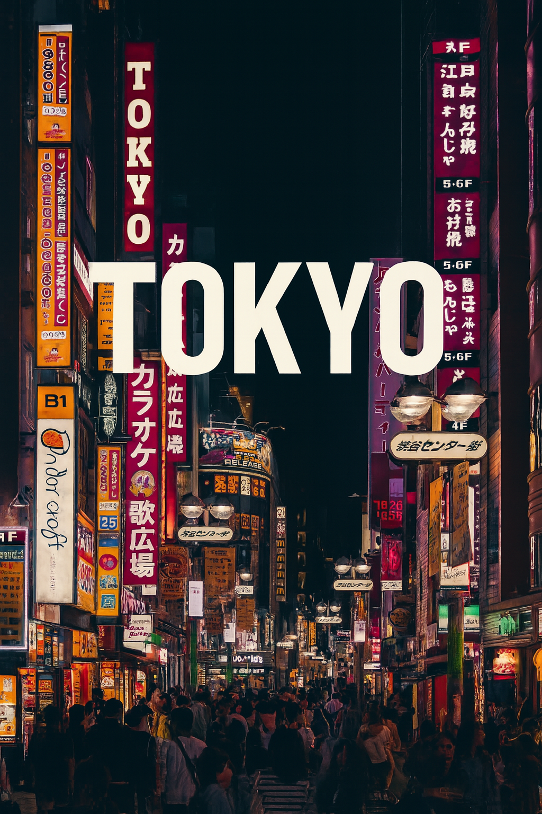

Le tracé de mon voyage
Le tracé de mon voyage
00:00 / 00:15
Cherbourg
Paris
Pékin
Tokyo
Carte des activités
🏙️ Villes
🏛️ Monuments
🎌 Activités
Programme du jour (
—
)
Lieu :
—
Ce que j'ai fait :
—
Historique :
—
Villes visitées

Rien à l'heure actuelle
Rien à l'heure actuelle
Monuments vus
Rien à l'heure actuelle
Rien à l'heure actuelle
Activités faites
Rien à l'heure actuelle
Rien à l'heure actuelle
Ressenti / Émotion
Rien à l'heure actuelle
Rien à l'heure actuelle
Edit
Rien à l'heure actuelle
Rien à l'heure actuelle
Livre lu
L'Idiot — F. Dostoïevski (1869)
La bonté peut-elle survivre ?